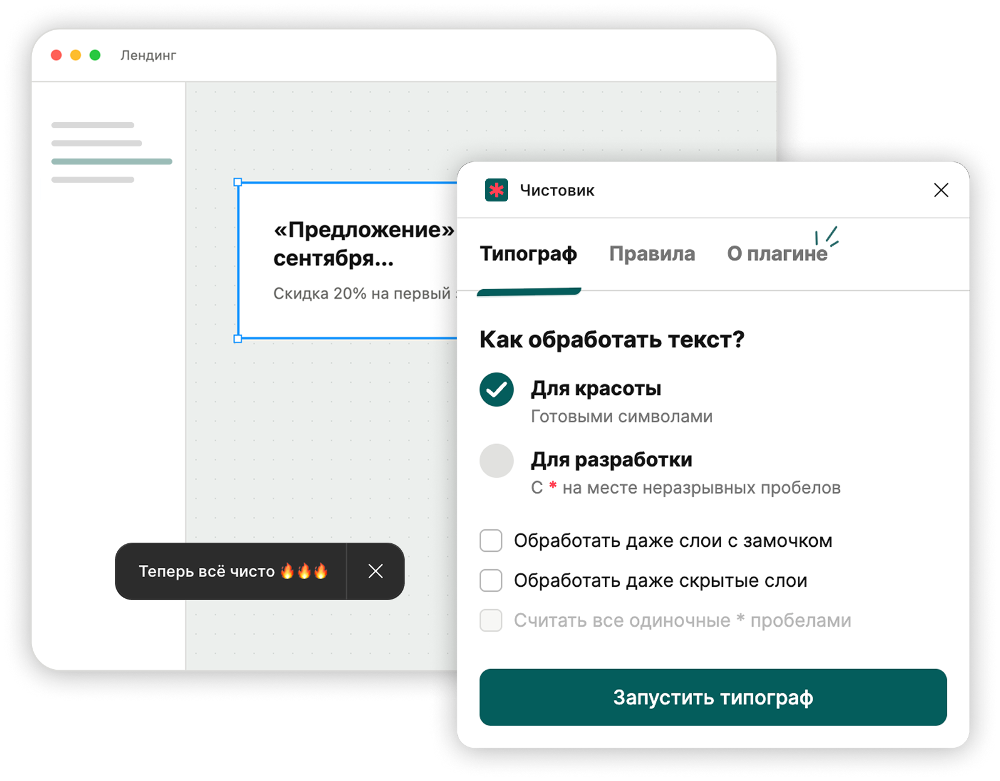

✱ Для UX-редакторов
Плагин для чистой типографики
Чистовик — плагин, который убирает висячие предлоги, ставит правильные тире, исправляет кавычки и другие мелочи

Без лишних исправлений
Заботится о типографике, но не вмешивается в текст
Плагин не решает за вас, как писать слова и названия — с ним вы не увидите в макете СМС вместо смс и другие внезапные правки
Было
Включите песню группы
"Король и Шут" на
полную громкость - соседи оценят!!
Стало
Включите песню группы
«Король и Шут»
на⍽полную громкость — соседи оценят!
Можно запускать без тревоги
Не ломает макет
Плагин меняет только текст внутри существующего слоя — и бережно останавливается, если что-то пошло не так.
-
01
Сохраняет слой и оформление
Шрифт, размер, цвет, ссылки и другие свойства остаются на месте.
-
02
Не перезаписывает свежие изменения
Если текст изменился во время обработки, Чистовик не запишет результат поверх новой версии.
-
03
Показывает проблемный слой
Если слой не удалось обработать, плагин сразу ведёт к нему и объясняет, что случилось.
Проверка там, где нужно
Один слой, фрейм или вся страница
Не обязательно запускать плагин для каждого элемента отдельно. Можно даже ничего не выбирать — тогда будут оттипографированы все тексты на странице.
Кавычки и пунктуация
- ✦ В русском тексте — «ёлочки», внутри них — „лапки“
- ✦ Три точки меняются на многоточие: ... → …
Тире и дефисы
- ✦ Длинное тире между словами: слово — слово
Числа, даты и деньги
- ✦ Пробел перед валютой: 1 000 ₽
Неразрывные пробелы
- ✦ Короткие слова не остаются в конце строки
Справка внутри плагина
Правила не нужно держать в голове
Полный список находится внутри Чистовика: ⭐ Продвинутые фичи → Правила.
Можно проверить поведение до запуска или разобраться в результате после. На сайте справочник не дублируется: актуальные правила всегда остаются рядом с типографом.
Два режима
Для готового макета и передачи в разработку
В обычном режиме Чистовик ставит настоящие неразрывные пробелы. В режиме для разработки показывает их заметными звёздочками.
Собственные отметки плагина не смешиваются с произвольными звёздочками в тексте.
Понятный результат
Показывает конкретный слой, а не просто ошибку
Когда часть текста не удалось обработать, Чистовик собирает проблемные слои в отдельном окне.
Нажмите на строку — Figma выделит нужный слой и прокрутит макет к нему. Искать вручную по всей странице не придётся.
- Проблемный слой найден
- Его состояние проверено
- К нему можно перейти
Не всё удалось обработать
Эти слои нужно проверить вручную